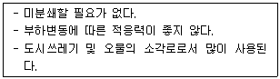
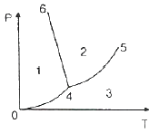
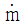
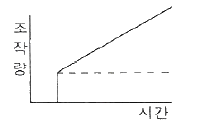
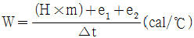
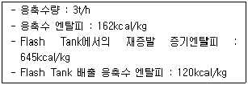
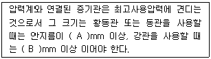

에너지관리산업기사 (2014-03-02 기출문제)
1과목: 열역학 및 연소관리
1. 천연가스는 약 몇 ℃에서 액화되는가?
- -122℃
- -132℃
- -152℃
- -162℃
(정답률: 80%)

2. 이상기체의 가역단열 변화를 가장 바르게 표시하는 식은? (단, P : 절대압력, V : 체적, k : 비열비, C : 상수이다.)
- Pk V = C
- Pk-1 Vn = C
- PVk = C
- PVk-1 = C
(정답률: 76%)
3. 압축비가 5인 오토사이클에서의 이론 열효율은? (단, 비열비[k]는 1.3으로 한다.)
- 32.8%
- 38.3%
- 41.6%
- 43.8%
(정답률: 71%)
4. 다음 보기의 특징을 가지는 고체연료 연소방법은?

- 유동층 연소
- 화격자 연소
- 미분탄 연소
- 스토커식 연소
(정답률: 75%)
5. 다음 그림은 물의 압력-온도 선도를 나타낸 것이다. 액체와 기체와 혼합물은 어디에 존재하는가?

- 영역 1
- 선 4 - 6
- 선 0 - 4
- 선 4 – 5
(정답률: 90%)
6. 프로판가스 1 Sm3를 공기과잉계수 1.1의 공기로 완전연소 시켰을 때의 습연소가스량은 약 몇 Sm3 인가?
- 14.5
- 25.8
- 28.2
- 33.9
(정답률: 46%)
7. 보일러 연소안전 장치에서 화염의 방사선을 전기신호로 바꾸어 화염 유무를 검출하는 플레임아이에 대한 설명으로 옳은 것은?
- Pbs셀, Cds셀 등은 자외선 파장의 영역에서 감지한다.
- 가스화염은 방사선이 적으므로 자외선 광전관을 사용한다.
- 광전관은 100℃ 이상 고온에서 기능이 파괴되므로 주위하여 사용한다.
- 플레임 아이는 가열된 적색 노벽에 직시하도록 설치하여 사용한다.
(정답률: 64%)
8. 질량 m[kg]의 어떤 기체로 구성된 밀폐계가 Q[kJ]의 열을 받아 일을 하고, 이 기체의 온도가 △T℃ 상승하였다면 이 계가 한 일은 몇 kJ 인가? (단, 이 기체의 정적비열은 Cv[kJ/kg·K], 정압비열은 Cp[kJ/kg·K] 이다.)
- Q - mCv△T
- mCv△T - Q
- Q - mCp△T
- mCp△T – Q
(정답률: 63%)
9. 수증기의 내부에너지 및 엔탈피가 터빈 입구에서 각각 u1[kJ/kg], h1[kJ/kg]이고 터빈 출구에서 u2[kJ/kg], h2[kJ/kg] 이다. 터빈의 출력은 몇 kW 인가? (단, 발생되는 수증기의 질량 유량은  [kg/s] 이다.)
[kg/s] 이다.)
- (u1 - u2)

(u1 - u2)- (h1 - h2)
 (h1 - h2)
(h1 - h2)
(정답률: 76%)
10. 메탄(CH4)의 가스상수는 몇 J/kg·K 인가?
- 29.3
- 53
- 287
- 519.6
(정답률: 61%)
11. 탄소 0.87, 수소 0.1, 황 0.03의 연료가 있다. 과잉공기 50%를 공급할 경우 실제 건배기가스량(Sm3/kg)은?
- 8.89
- 9.94
- 10.5
- 15.19
(정답률: 48%)
12. 증기 동력사이클의 기본 사이클인 랭킨 사이클(Rankine cycle)에서 작동 유체(물, 수증기)의 흐름을 옳게 나타낸 것은?
- 펌프 → 응축기 → 보일러 → 터빈 → 펌프
- 펌프 → 보일러 → 응축기 → 터빈 → 펌프
- 펌프 → 보일러 → 터빈 → 응축기 → 펌프
- 펌프 → 터빈 → 보일러 → 응축기 → 펌프
(정답률: 77%)
13. 수증기의 증발잠열에 대한 설명으로 옳은 것은?
- 포화온도가 감소하면 감소한다.
- 포화압력이 증가하면 증가한다.
- 건포화증기와 포화액의 엔탈피 차이다.
- 약 540kcal/kg(2257 kJ/kg)으로 항상 일정하다.
(정답률: 72%)
14. 열역학 제1법칙은?
- 질량 불변의 법칙
- 에너지 보존의 법칙
- 엔트로피 보존의 법칙
- 작용, 반작용의 법칙
(정답률: 91%)
15. 폴리트로픽지수 n의 값이 특정 값을 가질 때 상태변화가 된다. 다음 중 옳은 것은?
- n = 0 일 때 등온변화
- n = 1 일 때 정압변화
- n = ∞ 일 때 정적변화
- n = 0.5 일 때 단열변화
(정답률: 83%)
16. 잠열변화 과정에 해당하는 것은?
- -20℃의 얼음을 0℃의 얼음으로 변화시켰다.
- 0℃의 얼음을 0℃의 물로 변화시켰다.
- 0℃의 물을 100℃의 물로 변화시켰다.
- 100℃의 증기를 110℃의 증기로 변화시켰다.
(정답률: 84%)
17. 오토사이클에 대한 설명으로 틀린 것은?
- 등엔트로피 압축, 정적 가열, 등엔트로피 팽창, 정적 방열의 과정으로 구성된다.
- 작동유체의 비열비가 클수록 열효율이 높아진다.
- 압축비가 높을수록 열효율이 높아진다.
- 저속 디젤기관에 주로 적용된다.
(정답률: 72%)
18. 1mol의 프로판이 이론 공기량으로 완전연소되면 연소 가스는 몇 mol이 생성되는가?
- 6
- 18.8
- 23.8
- 25.8
(정답률: 36%)
19. 어떤 압력하에서 포화수의 엔탈피를 h, 물의 증발잠열을 γ, 건도를 x 라 할 때, 습포화증기의 엔탈피 h＂구하는 식은?
- h＂= h + γx
- h＂= h + γ
- h＂= h - γx
- h＂= h - γ
(정답률: 59%)
20. 다음 중 열역학 제2법칙과 가장 직접적인 관련이 있는 물리량은?
- 엔트로피
- 엔탈피
- 열량
- 내부에너지
(정답률: 73%)
2과목: 계측 및 에너지진단
21. 열전온도계의 열전대 종류 중 사용온도가 가장 높은 것은?
- K형 : 크로엘-알로엘
- R형 : 백금-백금·로듐
- J형 : 철-콘스탄탄
- T형 : 구리-콘스탄탄
(정답률: 86%)
22. 냉각식 노점계를 자동화시킨 습도계로서 저습도의 측정은 가능하지만 기구가 다소 복잡한 것은?
- 듀셀 노점계
- 광전관식 노점습도계
- 모발 습도계
- 냉각식 노점계
(정답률: 79%)
23. 다음 그림과 같은 조작량과 변화는?

- P동작
- I동작
- PI동작
- PID동작
(정답률: 78%)
24. 운전 조건에 따른 보일러 효율에 대한 설명으로 틀린 것은?
- 전부하 운전에 비하여 부분부하 운전 시 효율이 좋다.
- 전부하 운전에 비하여 과부하 운전에서는 효율이 낮아진다.
- 보일러의 배기가스온도가 높아지면 열손실이 커진다.
- 보일러의 운전효율을 최대로 유지하려면 효율-부하곡선이 평탄한 것이 좋다.
(정답률: 78%)
25. 다음 중 비접촉식 온도계가 아닌 것은?
- 광고온계
- 방사온도계
- 열전온도계
- 색온도계
(정답률: 82%)
26. 보일러 실제증발량에 증발계수를 곱한 값은?
- 상당증발량
- 단위 시간당 연료소모량
- 연소실 열부하
- 전열면 열부하
(정답률: 86%)
27. 다음 중 다이어프램의 재질로서 옳지 않는 것은?
- 고무
- 양은
- 탄소강
- 스테인리스강
(정답률: 68%)
28. 제어동작 중 비례 적분 미분 동작을 나타내는 기호는?
- PID
- PI
- P
- ON-OFF
(정답률: 82%)
29. 다음 중 측정제어 방식이 아닌 것은?
- 캐스케이드 제어
- 비율 제어
- 시퀀스 제어
- 프로그램 제어
(정답률: 82%)
30. 다음 중 아르키메데스의 원리를 이용한 압력계는?
- 플로트식
- 침종식
- 단관식
- 랭밸런스식
(정답률: 73%)
31. Bomb 열량계에서 수당량을 계산하는 식은

이다. 여기서 e1 이 나타내는 것은 무엇인가?- NO의 생성열
- NO의 연소열
- CO2의 생성열
- CO2의 연소열
(정답률: 61%)
32. 물속에 피토관을 설치하였더니 전압이 12mH2O, 정압이 6mmH2O 이었다. 이때 유속은 약 몇 m/s 인가?
- 12.4
- 10.8
- 9.8
- 7.6
(정답률: 54%)
33. 보일러 열정산에서 입열항목에 해당하는 것은?
- 발생증기의 흡수열량
- 배기가스의 열량
- 연소잔재물이 갖고 있는 열량
- 연소용 공기의 열량
(정답률: 74%)
34. 내경 25.4mm인 관도에서 물의 평균유속이 1m/sec 일 때 중량 유량은 약 몇 kg/s 인가?
- 0.51
- 1.67
- 2.34
- 2.87
(정답률: 41%)
35. 장치 내에 공급된 열량 중에서 그 열을 유효하게 이용한 열량과의 비율을 나타낸 것은?
- 열정산
- 발열량
- 유효출열
- 열효율
(정답률: 73%)
36. 다음 중 1N(뉴턴)에 대한 설명으로 옳은 것은?
- 질량 1kg의 물체에 가속도 1m/s2 이 작용하여 생기게 하는 힘이다.
- 질량 1g의 물체에 가속도 1cm/s2 이 작용하여 생기게 하는 힘이다.
- 면적 1cm2에 1kg의 무게가 작용할 때의 응력이다.
- 면적 1cm2에 1g의 무게가 작용할 때의 응력이다.
(정답률: 82%)
37. SI 단위계의 기본단위에 해당 되지 않는 것은?
- 길이
- 질량
- 압력
- 시간
(정답률: 83%)
38. 보일러 열정산시 측정할 필요가 없는 것은?
- 급수량 및 급수온도
- 연소용 공기의 온도
- 배기가스의 압력
- 과열기의 전열면적
(정답률: 64%)
39. 보일러 자동제어의 연소제어(A.C.C)에서 조작량에 해당되지 않는 것은?
- 연료량
- 연소가스량
- 공기량
- 전열량
(정답률: 77%)
40. 계측기의 보전관리 사항에 해당되지 않는 것은?
- 정기 점검과 일상 점검
- 정기적인 계측기의 교체
- 보전 요원의 교육
- 계측기의 시험 및 교정
(정답률: 71%)
3과목: 열설비구조 및 시공
41. 직경 200mm 배관을 이용하여 매분 2500L의 물을 흘려 보낼 때 배관 내의 유속은 약 몇 m/s 인가?
- 1.1
- 1.3
- 1.5
- 1.8
(정답률: 59%)
42. 소용량 강철제보일러의 규격을 옳게 나타낸 것은?
- 강철제보일러 중 전열면적이 1m2 이하이고 최고사용압력이 0.35 MPa 이하인 것
- 강철제보일러 중 전열면적이 5m2 이하이고 최고사용압력이 0.35 MPa 이하인 것
- 강철제보일러 중 전열면적이 10m2 이하이고 최고사용압력이 0.1 MPa 이하인 것
- 강철제보일러 중 전열면적이 15m2 이하이고 최고사용압력이 0.1 MPa 이하인 것
(정답률: 69%)
43. 코크스로용 내화물로 사용되는 규석벽돌의 특징이 아닌 것은?
- 열전도율이 비교적 크다.
- 이상팽창을 한다.
- 고온강도가 크다.
- 내식성, 내마모성이 크다.
(정답률: 66%)
44. 돌로마이트(dolomite) 내화물에 대한 설명으로 틀린 것은?
- 염기성 슬래그에 대한 저항이 크다.
- 소화성이 크다.
- 내화도는 SK26~30 정도이다.
- 내스폴링성이 크다.
(정답률: 76%)
45. 검사대상기기인 보일러의 연료 또는 연소방법을 변경한 경우 받아야 하는 검사는?
- 구조검사
- 개조검사
- 계속사용 성능검사
- 설치검사
(정답률: 82%)
46. 분말 철광석을 괴상화하는데 적합한 로는?
- 소결로
- 저항로
- 가열로
- 도가니로
(정답률: 70%)
47. 용광로의 종류가 아닌 것은?
- 전로식
- 철피식
- 철대식
- 절충식
(정답률: 69%)
48. 도시가스 공급설비인 정압기의 기능을 바르게 설명한 것은?
- 1차 압력을 일정하게 유지
- 2차 압력을 일정하게 유지
- 1차 압력과 2차 압력을 모두 일정하게 유지
- 1차 압력과 2차 압력의 합을 일정하게 유지
(정답률: 71%)
49. 5kg/cm2·g 의 응축수열을 회수하여 재사용하기 위하여 설치한 다음 조건의 Flash Tank의 재증발 증기량(kg/h)은 약 얼마인가?

- 1⑤0
- 360
- 240
- 195.3
(정답률: 50%)
50. 신축이음 중 온수 혹은 저압증기의 배관분기관 등에 사용되는 것으로 2개 이상의 엘보를 사용하여 나사맞춤부의 작용에 의하여 신축을 흡수하는 것은?
- 벨로우즈 이음(Bellows Expansion Joint)
- 슬리브 이음(Sleeve Joint)
- 스위블 이음(Swivel Joint)
- 신축곡관(Expansion Loop Joint)
(정답률: 81%)
51. 증기와 응축수의 온도 차이를 이용한 증기트랩은?
- 단노즐식
- 상향버켓식
- 플로트식
- 바이메탈식
(정답률: 67%)
52. 보일러를 본체의 구조에 따라 분류한 방법으로 가장 올바른 것은?
- 연관보일러, 원통보일러, 수관보일러
- 원통보일러, 수관보일러, 특수보일러
- 노통보일러, 수관보일러, 관류보일러
- 연관보일러, 수관보일러, 관류보일러
(정답률: 67%)
53. 다음 A, B에 들어갈 안지름 크기로 맞는 것은?

- A = 6.5, B = 12.7
- A = 8.5, B = 13.7
- A = 5.5, B = 11.8
- A = 4.8, B = 10.7
(정답률: 83%)
54. 알루미늄 용해 조업에서 고온을 피하고 노온도를 700~750℃로 지정한 주된 이유는?
- 연료 절약
- 가스의 흡수 및 산화 방지
- 노재의 침식 방지
- 알루미늄의 증발 방지
(정답률: 73%)
55. 보일러의 응축수를 회수하여 재사용하는 이유로서 가장 거리가 먼 것은?
- 용수비용 절감
- 보일러효율 향상
- 절탄기 사용 억제
- 보일러 급수질 향상
(정답률: 74%)
56. 특수 유체보일러에 사용되는 열매체의 종류가 아닌 것은?
- 다우삼
- 모빌썸
- 바아크
- 카네크롤
(정답률: 69%)
57. 신·재생에너지설비 중 수소에너지 설비에 대하여 바르게 나타낸 것은?
- 물이나 그 밖에 연료를 변환시켜 수소를 생산하거나 이용하는 설비
- 물의 유동에너지를 변환시켜 전기를 생산하는 설비
- 수소와 산소의 전기화학 반응을 통하여 전기 또는 열을 생산하는 설비
- 물, 지하수 및 지하의 열 등의 온도차를 변환시켜 에너지를 생산하는 설비
(정답률: 68%)
58. 다음 중 무기질 보온재에 속하는 것은?
- 펠트
- 콜크
- 규조토
- 유레탄 폼
(정답률: 72%)
59. 보일러에서 보염장치를 설치하는 목적이 아닌 것은?
- 연소 화염을 안정시킨다.
- 안정된 착화를 도모한다.
- 연소가스 체류 시간을 짧게 해 준다.
- 저공기비 연소를 가능하게 한다.
(정답률: 77%)
60. 육용강재 보일러에서 관판의 롤확관 부착부는 완전한 고리형을 이룬 접촉면의 두께가 몇 mm 이상이어야 하는가?
- 7mm
- 10mm
- 13mm
- 16mm
(정답률: 66%)
4과목: 열설비취급 및 안전관리
61. 방열기의 전 응축수량이 5000kg/h 일 때 응축수 펌프의 양수량은?
- 83 kg/min
- 150 kg/min
- 200 kg/min
- 250 kg/min
(정답률: 53%)
62. 보일러수 이온교환 처리 시 주의사항으로 틀린 것은?
- 이온교환 처리에 앞서 현탁물, 유리염소 등을 제거 하여야 한다.
- 강산성 양이온 교환수지의 경우는 수지를 보충할 필요가 없다.
- 원수에 대하여 수질 감시를 하여야 한다.
- 처리수의 수질과 수량을 감시하여야 한다.
(정답률: 81%)
63. 보일러 급수 중 철영이 함유되어 있는 경우 처리하는 방법으로 가장 적합한 것은?
- 기폭법
- 탈기법
- 가열법
- 이온교환법
(정답률: 74%)
64. 사용 중인 보일러의 점화전 점검 또는 준비사항이 아닌 것은?
- 수위와 압력 확인
- 노벽 및 내화물 건조
- 노 내의 환기, 송풍 확인
- 부속장치 확인
(정답률: 70%)
65. 보일러 본체가 과열되는 원인이 아닌 것은?
- 보일러 동 내부에 스케일이 부착한 경우
- 안전수위 이상으로 급수한 경우
- 국부적으로 심하게 복사열을 받는 경우
- 보일러수의 순환이 좋지 않은 경우
(정답률: 77%)
66. 보일러 운전이 끝난 후 노내 및 연도에 체류하고 있는 가연성가스를 취출시키는 작업은?
- 분출작업
- 댐퍼작동
- 프리퍼지
- 포스트퍼지
(정답률: 71%)
67. 급수용으로 사용되는 표준대기압에서 물의 일반적 성질 중 맞지 않는 것은?
- 응고점은 100℃ 이다.
- 임계압력은 22 MPa 이다.
- 임계온도는 374℃ 이다.
- 증발잠열은 539 kcal/kg 이다.
(정답률: 70%)
68. 보일러의 동판에 점식(Pitting)이 발생하는 가장 큰 원인은?
- 급수 중에 포함되어 있는 산소 때문
- 급수 중에 포함되어 있는 탄산칼슘 때문
- 급수 중에 포함되어 있는 인산마그네슘 때문
- 급수 중에 포함되어 있는 수산화나트륨 때문
(정답률: 79%)
69. 검사대상기기 조종자의 선임에 대한 설명으로 틀린 것은?
- 에너지관리기사 소지자는 모든 검사대상기기를 조정할 수 있다.
- 최고사용압력이 1MPa 이하이고, 전열면적이 10m2 이하인 증기보일러는 인정검사대상기기조종자가 조종할 수 있다.
- 1구역당 1인 이상의 조종자를 채용해야 한다.
- 조종자를 선임치 아니한 경우 2천만원 이하의 벌금에 처할 수 있다.
(정답률: 72%)
70. 산세관 시 부식 발생방지를 위한 대책이 아닌 것은?
- 산화성이온에 의한 부식방지
- 농도차 밍 온도차에 의한 부식방지
- 금속조직의 변화에 의한 부식방지
- 세관액의 처리조건에 의한 부식방지
(정답률: 62%)
71. 보일러 청관제 중 슬러지 조정제가 아닌 것은?
- 탄닌
- 리그닌
- 전분
- 수산화나트륨
(정답률: 69%)
72. 관류보일러에서 보일러와 압력방출장치와의 사이에 체크밸브가 설치되어 있다. 압력방출장치는 안전을 위하여 규정상 몇 개 이상 설치되어 있는가?
- 1개
- 2개
- 3개
- 4개
(정답률: 80%)
73. 버킷 트랩을 사용하여 응축수를 위로 배출시키려면 트랩출구에 어떤 밸브를 설치하는가?
- 앵글 밸브
- 게이트 밸브
- 글로브 밸브
- 체크 밸브
(정답률: 73%)
74. 증기보일러의 과열(소손)방지대책이 아닌 것은?
- 보일러 수위를 이상 저하시키지 말 것
- 보일러수를 과도하게 농축시키지 말 것
- 보일러수 중에 유지를 혼입시키지 말 것
- 화염을 국부적으로 집중시킬 것
(정답률: 84%)
75. 자발적 협약에 포함하여야 할 내용이 아닌 것은?
- 협약 체결 전년도 에너지소비 현황
- 에너지이용 효율향상 목표
- 온실가스배출 감축 목표
- 고효율기자재의 생산 목표
(정답률: 74%)
76. 보일러 관수처리가 부적당할 때 나타나는 현상으로 가장 거리가 먼 것은?
- 잦은 분출로 열손실이 증대된다.
- 프라이밍이나 포밍이 발생한다.
- 보일러수가 농축되는 것을 방지한다.
- 보일러 판과 관에 부식을 일으킨다.
(정답률: 64%)
77. 에너지법에서 정한 에너지 공급설비가 아닌 것은?
- 전환설비
- 수송설비
- 개발설비
- 생산설비
(정답률: 73%)
78. 에너지사용계획을 수립하여 산업통상자원부 장관에게 제출하여야 하는 자는?
- 민간사업주관자로 연간 5천 티오이 이상의 연료 및 열을 사용하는 시설
- 공공사업주관자로 연간 2천 티오이 이상의 연료 및 열을 사용하는 시설
- 민간사업주관자로 연간 1천만 킬로와트시 이상의 전력을 사용하는 시설
- 공공사업주관자로 연간 2백만 킬로와트시 이상의 전력을 사용하는 시설
(정답률: 76%)
79. 보통 가연성 물질의 위험성은 무엇을 기준으로 하는가?
- 착화점
- 연소점
- 산화점
- 인화점
(정답률: 76%)
80. 보일러에서 증기를 송기할 때의 조작방법으로 틀린 것은?
- 증기헤더의 드레인 밸브를 열어 응축수를 배출한다.
- 주증기관 내에 관을 따뜻하게 하기 위해 다량의 증기를 급격히 보낸다.
- 주증기 밸브의 열림 정도를 단계적으로 한다.
- 주증기 밸브를 완전히 연 다음 약간 되돌려 놓는다.
(정답률: 83%)